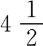

7．巴比伦人对于数学的使用
尽管巴比伦人的数学知识有限，但数学在他们生活的许多方面都起作用。巴比伦位于古代贸易通道上，他们商业活动范围很广。巴比伦人用他们的算术和简单代数知识来表示长度和重量，来兑换钱币和交换商品，来计算单利和复利，来计算税额，来给农民、教会和国家之间分配收获的粮食。划分土地和遗产的问题引出代数问题。牵涉到数学的大多数楔形文字著作（除了数字表和解题的文件之外）都是关于经济问题的。在他们的早期历史中，经济对算术发展的影响是毋庸置疑的。
挖运河、修堤坝以及搞其他水利工程都需要用到计算。关于砖的需用量问题就引起许多数字计算和几何问题。他们需要计算谷仓和房屋的容积以及田地的面积。巴比伦数学和实际问题之间的紧密联系可从下例看出：要挖一条运河，其横断面为给定的梯形，其长、阔、深是已知的。每人每天的挖土量是已知的，挖土人数和他们的工作日数之和也是已知的。问题是要算出人数和工作日数。
由于从希腊时代起数学和天文学之间的关系就非常重要，所以我们这里要指出巴比伦人在天文学方面有哪些知识并做了些什么工作。苏美尔人的天文知识如何我们一无所知，而阿卡得时代的天文知识是粗糙的并且缺乏数量关系；在出现值得一提的天文学之前，数学先有了发展。在亚述时代（公元前700年左右）的天文学中开始有了对现象的数学描述，并有系统地记录观测数据。在公元前的最末三个世纪里，数学的应用多了起来，特别是用于计算月球和行星的运动。天文学方面的文件大多产生在这个塞琉西时期。这种文件有两类，一类是程式文书，一类是天文历书，即给出天体在不同时期所处位置的书表。程式文书是说明怎样计算天文历书的。
从他们对日月观察数据所作的算术，可以看出巴比伦人计算了相继数据之间的一次和二次差分，观察到了一次或二次差分等于常数时的情况，并对数据作了外插与内插。他们算法的程式等于利用了这一事实：所观测的数据可用多项式函数来拟合，这样使他们能预测各行星在每一天的位置。他们颇为准确地知道一些行星的运动周期，并利用亏蚀现象来作为计算的基础。但在巴比伦人的天文学里，并没有对行星运动或月球运动给出几何概型。
塞琉西时期的巴比伦人已对太阳和月球的运动记录了很多的数据，其中给出变动的速度和位置。这些数据表里还列有（或者易于从中推算出）太阳和月球的特定位置和亏蚀时间。他们的天文学家能把新月和亏蚀出现的时间算准到几分钟之内。从他们的数据说明他们知道太阳年或回归年（季节年）等于12＋22/60＋8/602个月（从新月出现到下次新月出现为一月），并把恒星年（太阳相对于恒星的位置复原所需之时）准确算到

分。黄道带里相应于十二宫的星座是他们早就知道的，但黄道带的名称是在公元前419年的一项文件中才首次出现的。黄道带每宫占30°。天上行星的位置以恒星为依据来确定，也用其在黄道带中的位置来确定。
天文学有许多用处。其一是要用它来算出历书，这是由太阳、月球和恒星的位置推定的。年、月、日这些天文上的数量要准确算出，才能知道播种日和宗教节日。部分由于日历同宗教节日和宗教仪式的关系，部分由于他们认为天体都是神，所以在巴比伦由祭司掌管日历。
他们的日历是阴历。每月是在月球全黑（我们今日所谓的新月）后首次出现娥眉月时开始的。日子从首次出现娥眉月的那天晚上开始算起，并把从日落到第二次的日落之间的时间作为一天。阴历是难办的，因为虽然使一个月有整数的日子是件方便的事，但根据太阳月球接连有同样相对位置（即从新月到新月）之间相隔日数来算的阴历月份，有的是29天，有的是30天。这就出现该定哪些月为29天和哪些月为30天的问题。更重要的一个问题是怎样使阴历符合季节。这问题的解答很复杂，因它要取决于月球和太阳的运行路径和它们的速度。阴历里还插进了额外的月份，使得在19年里这样插进了7个月之后，才能让阴历约摸符合太阳年。这样235个阴历月份等于19个太阳年。他们逐年算出了夏至的时间，然后取相等的分段，定出冬至和春分、秋分的时间。这种历法为犹太人、希腊人所沿用，罗马人起初也沿用，直到公元前45年他们采用儒略历法（Julian calendar）时为止。
把圆分为360度是巴比伦天文学家在公元前最末一个世纪里首创的。这跟他们早先用60作基底一事不相干；不过60却用来作为把度分成分和把分分成秒的底数。天文学家托勒玫（公元2世纪）也沿用巴比伦人的这种分法。
与天文学密切相关的是占星术。巴比伦人也像其他许多古代文明社会中的人一样，认为天体都是神，因而认为它们能影响甚至主宰人间的事。如果我们想想太阳的重要性，它给我们以光和热，对植物生长的影响，日蚀时所引起的恐惧，以及动物交配的季节性现象，那就很可以理解，为什么古人相信天体甚至能影响人的一生中的日常事务。
古代社会中伪科学性的预卜并非都用天文。他们认为数本身有神秘特性并可用之于预卜未来。我们可在但以理书（the Book of Daniel）及新旧约先知的著述中看出巴比伦人预卜未来的做法，希伯来人的“科学”测字术（gematria）（希伯来传统神秘主义的一种形式）就是根据这一事实而来的，即因希伯来人用字母来表示数，所以他们认为由字母组成的每个字都具有一个数值。如果两个字的字母值之和相同，那就表明这两个字所代表的两种概念、两个人或两件事之间有重要的联系。在以赛亚的预言里（21∶8），狮子宣告巴比伦城的沦落，因为希伯来文中狮子这个字和巴比伦这个字里，其字母所代表的数字之和是一样的。